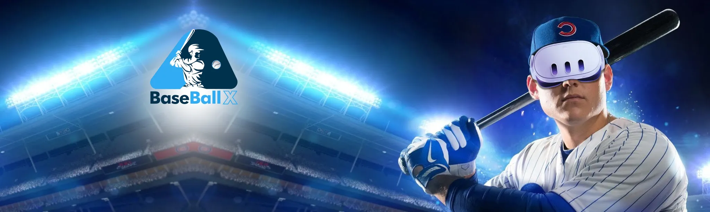
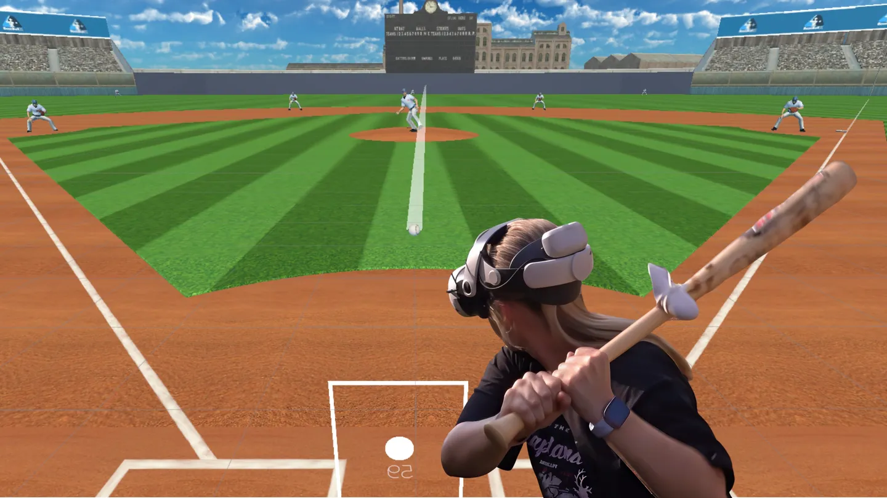

01 / 04
Overview
Baseball X is a physics-accurate VR baseball simulator that lets players train, compete, and analyze their swing in real time. Unlike typical VR sports titles that rely on canned animations, Baseball X uses true bat–ball collision physics for realistic contact and feedback.
I was the lead developer on the game. The project grew out of XRev's Cricket X codebase, but baseball is a fundamentally different sport to simulate — so much of my work was rebuilding core systems rather than reskinning them.


02 / 04
What I built
- Bat–ball physics, rebuilt from scratch. Cricket bats are flat; baseball bats are round. That single difference invalidates the entire contact model — deflection angles, sweet-spot behavior, and feedback all had to be re-engineered for cylindrical contact.
- Core gameplay systems and architecture. The fielding system, scoring system, and multiple game modes — everything code-side, including the architectural rework needed to keep the game maintainable as it grew.
- Environment & animation integration. Set up everything delivered by the 3D artists (stadium and environment assets) and the animation team, wiring their work into the game.
- Shader-based impostor crowds. Stadium crowds rendered with the impostor technique used in major sports games: flat geometry whose materials and shaders make each spectator read as a true 3D object from any angle — filling the stands at a fraction of the cost of real meshes.
- Backend integration. Database integration, player accounts, and login — connecting the game to server-side services.
- Companion app. A separate app that lets a coach or friend set up pitches remotely instead of inside VR. It visualizes the pitcher and pitch trajectory, replays the player's last shot, and surfaces swing analytics.
- Website integration (in progress). The Baseball X website is being built to connect with the game for stats and analysis.
03 / 04
Back on Baseball X in 2026
When I returned to XRev in June 2026, I picked the game back up:
- A scenario language for new modes. I designed SDL, the Session Definition Language: one JSON file describes a whole playable batting session — a timeline of messages, pitches and branches, session variables, rules (event → condition → actions) and win/lose objectives with star ratings. A generic runtime plays any valid file, so a new mode needs no new C#.
- Rule and objective engines, and an editor. Eight rule triggers and seven objective types, plus a designer-facing editor for authoring sessions without hand-writing JSON and publishing them to Firebase.
- UI Toolkit migration. Moved the lobby and the in-game HUD from canvas UI to UI Toolkit.
- Quest 3S, subscriptions and diagnostics. Quest 3S support with a tuned graphics profile, Pro subscriptions read from the web store, and a tracking-diagnostics tool for chasing controller and bat issues.
04 / 04